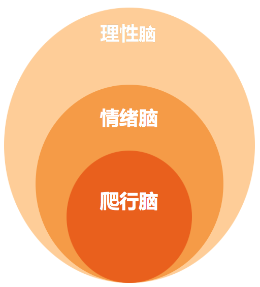

- 00 开篇词 你为什么需要学管理？.md.html
- 01 多年前的那些工程师都去哪了？.md.html
- 02 我要不要做管理呢？内心好纠结！.md.html
- 03 哪些人比较容易走上管理岗位？.md.html
- 04 我要不要转回去做技术呢？.md.html
- 05 作为技术管理者，我如何保持技术判断力？.md.html
- 06 我这样的风格能做管理吗？.md.html
- 07 我能做好管理吗，大家服我吗？.md.html
- 08 管理到底都做哪些事儿？.md.html
- 09 从工程师到管理者，角色都发生了哪些变化？.md.html
- 10 新经理常踩的坑儿有哪些？.md.html
- 11 我刚开始带团队，从哪里着手呢？.md.html
- 12 如何界定我团队是干什么的呢？.md.html
- 13 如何为团队设定合理的目标呢？.md.html
- 14 如何来规划团队的组织结构呢？.md.html
- 15 我都要申请哪些资源呢？.md.html
- 16 团队建设该从哪里入手？.md.html
- 17 如何提升员工的个人能力？.md.html
- 18 如何提升员工的工作意愿和积极性？.md.html
- 19 如何兼顾团队分工的稳定性和灵活性？.md.html
- 20 有什么方法可以有效提升团队凝聚力吗？.md.html
- 21 如何物色和培养核心人才？.md.html
- 22 如何建设团队文化，营造团队氛围？.md.html
- 23 如何和低绩效员工谈绩效？.md.html
- 24 如何让团建活动不再“收效甚微”？.md.html
- 25 多任务并行该如何应对？.md.html
- 26 如何确保项目的有效执行？.md.html
- 27 如何让流程机制得到有效的执行？.md.html
- 28 管理沟通那些事儿.md.html
- 29 沟通经常鸡同鸭讲，说不到一块怎么办？.md.html
- 30 如何掌控自己的情绪，以及如何管理情绪化的员工？.md.html
- 31 我各方面做得都很好，就是做不好向上沟通.md.html
- 32 横向沟通和非职权影响力.md.html
- 33 向下沟通的常见实例解析.md.html
- 34 管理沟通上有哪些常见的坑儿呢？.md.html
- 35 从空降谈管理方法论的积累.md.html
- 36 走出自己的管理之路.md.html
- 捐赠
30 如何掌控自己的情绪，以及如何管理情绪化的员工？
在我们的管理工作中，不可避免地会碰到一些容易情绪化的合作者，可能是我们的下级、我们的上级，甚至可能是我们自己。大家都不喜欢和情绪化的人打交道，碰到坏情绪的人唯恐避之不及，敬而远之。可是，如果是自己或者自己的上、下级，那就避无可避了。那么，有没有办法可以让自己不要动不动就情绪化呢？下面我们就仔细地来聊一聊。
要探讨情绪管理问题，我们就需要先界定一下我们所说的“情绪”是指什么。
显然，情绪每个人都有，并不是那些情绪化的人所特有的。虽然情绪如此普遍，但要想探讨清楚它却很难。目前学界公认的人类的基本情绪有 4～10 种，其中被广泛认同的有恐惧、生气、伤心、厌恶、惊喜和高兴等。
对于管理沟通来说，我们倒没有必要去探讨所有的情绪，只需要去关心最令我们头疼的情绪即可。显然，大家说的情绪管理，基本上都是对于情绪“激动”“生气”甚至是“愤怒”的管理；我们所说的情绪化，一般也是指某个人特别容易情绪激动，并且常常把这种情绪带入到工作中。因此，我们今天探讨情绪管理，也主要围绕“激动”或“愤怒”来展开。
话说回来，有那么多种情绪，为什么在工作中，大家唯独对于激动或愤怒这么耿耿于怀呢？我想，至少有两个原因：
愤怒是一种“战斗”情绪，自带攻击属性，非常容易引发另一方高度紧张地回应。无论是选择对抗、防卫或逃避，潜意识里感受到的都是威胁，如此，便妨害到“生存和安全”这个人类最基础的需求层次，并由此对合作关系造成很强的破坏性，还容易传染。
从愤怒中“跳出来”非常困难。相信你曾经有过这样的体验，面对一个正在愤怒中的人，你说什么他都听不进去，能够不迁怒于你，已经是谢天谢地了。
那么，为什么从愤怒中抽离出来这么困难呢？这里就不得不说一下人的“三层脑结构”。
美国学者麦克林（Mclean）根据大脑演化过程提出了三个脑层次的理论：最里面的是“爬行动物脑”，这部分脑是从爬行动物那里继承下来的，控制着人本能的、无意识的、瞬间反应的行为，属于“生存式大脑”；中间的这层大脑，是从哺乳动物遗传下来的部分，控制着情感和情绪，并沉淀和保持长期形成的习惯模式，这种模式反应也很快速，称为“情绪脑”；而最外层的大脑，是智人阶段才进化出来的，控制着视觉、想象力、辨别力、系统思考等，称为“理性脑”。这“三层脑结构”的示意图如下：

“三层脑结构”
显然，我们日常所进行的分析思考、设计规划、沟通交流等，都是基于“理性脑”工作的。虽然“理性脑”可以让我们做很多复杂的智力活动，但是响应优先级和响应速度却远远不及“情绪脑”和“爬行脑”。也就是说，“爬行脑”和“情绪脑”更容易中断“理性脑”的工作，而且一旦我们的大脑工作在“爬行脑”和“情绪脑”状态，就无暇顾及“理性脑”的工作了。这就是为什么人在盛怒之下，很难冷静思考和准确判断。
那么“情绪脑”和“爬行脑”会造成这么多负面情绪，而且也不如“理智脑”那么复杂和理性，是不是就成了大脑的“阑尾”呢？事实上，人能良好运转，大部分靠的都是无意识的、本能的行为，比如走路。而且，“爬行脑”和“情绪脑”的反应都很快，在遇到威胁和紧急情况的时候，它们能够立即做出反应，以最大程度地保证我们的安全。
所以，“爬行脑”和“情绪脑”是极其重要，不可或缺的。你不难发现，即使是“愤怒”这么令人头疼的情绪，它也有着非常积极的一面，比如它会让我们在面对威胁的时候充满勇气和爆发力，西方很多将军就利用这一点来做战前动员。所以“愤怒”并不是一个一无是处的“坏东西”，只是出现在不合理的场合，才会给我们造成困扰。
你也许会问，我们要讨论的是情绪管理，又不是研究脑科学，花这么多时间讲“三层脑结构”做什么呢？理由有三：
你要想掌控和管理自己的情绪，不了解它又如何管理呢？所以，你要先认识它。
如果你对于情绪，比如愤怒，总是想着回避和嫌弃它，又怎么能够管理它，和它做朋友呢？所以，你还要看到情绪的积极意义，并接纳它的存在，正视它是管理它的前提。
清楚了从愤怒难以恢复理智和平静的原因，实际上你也就知道了管理愤怒和激动的方法。即，用一根“管子”打通“理智脑”和“情绪脑”，当情绪控制大脑的时候，好让理智也有机会参与进来。这里这根“管子”，就是建立对情绪的觉察。对情绪的觉察，是情绪智力的核心能力，是跳出情绪的钥匙。一旦你觉察到自己正处在一种不理智的愤怒当中，只要你愿意，就会有各种各样的方法和策略去消除它，并分辨得失，做出理智反应。网上和很多情绪管理书籍上谈论的应对措施，大都是接下来这个阶段的应对方法，若你感兴趣也可以对照自己的具体情况去查查资料。
既然找到了情绪管理的钥匙，那么接下来，我们就探讨一下，如何拿到“跳出情绪的钥匙”，也就是如何建立觉察，并强化这个觉察，让我们越来越容易从情绪中抽离出来。
首先，我们先在理智的情况下为自己建立一个觉察，审视自己：“我是否在发怒呢？”这是基于这样一个认知，即“在愤怒的情绪下处理问题容易误判，如果有情绪，就先处理掉情绪再处理事情”。
接下来，每次处理一个紧要的事情前后，都默默审视一下自己：“我是否有发怒呢？”也就是让这个意识不断强化，形成一种条件反射或模式，以至于一发怒就会去觉察自己是否在生气。如果你写过“钩子”程序，你就会发现，这个觉察的模式就好像是挂载一个“钩子”，一旦“钩子”被触发，后面跟上处理程序就可以了，显然这个处理程序就是情绪应对的步骤。久而久之，当你能够用这个理智的“钩子”去控制情绪的时候，你突然发现，情绪不再是一头难以驯服的野兽，反而变成一个“工作助手”了。
当然，这个模式形成的过程，并不容易，否则就不会称为“模式”了。除了自己强化，还有几个外部力量可以进行协助。
可以靠经常能关注到的一个随身物件来提示。比如你的手环、戒指，甚至是手上的一个伤疤，只要你能时不时关注到，就可以。一旦看到这个物件，你就问一下自己“我是不是在发怒”，这也是一种觉察。
每天写觉察日记，反思自己在情绪管理方面是否有所失误。我身边就有伙伴用这种方式并取得了比较好的效果。
可以和伙伴约定，请他帮忙提醒。一旦他发觉你情绪不对，都可以当场或事后提醒你，来加强觉察。
用你的重要关切来提醒。比如，你可以和你的上级约定，把这个季度的情绪化频次作为一项 KPI 纳入自己的《绩效计划》，从而让你心里总是悬着一根弦来不断提醒自己要注意情绪。细心的你一定发现了，这个方法显然也可以用于帮自己的下级来提升情绪管理的能力。事实上，我就用过，并且取得了很好的效果。
借助上面提到的觉察方法，只要不断地练习，假以时日，你就会发现，你不但可以觉察到自己的情绪了，甚至还可以发挥它的力量，为你所用。
最后，为方便你管理自己的情绪，抑或者是帮你的下级和伙伴去提升情绪掌控能力，我梳理了整个步骤并总结为如下：
认知它。了解它是怎么产生的，以及怎么发挥作用的。如果是帮下级改进，可以先给他讲讲“三层脑结构”的事情。
认同它。接纳并疏导自己的情绪压力，而不是压抑它。看到它消极的一面，也要看到积极的一面，并和它交朋友。如果是帮下级改进，切忌一味批判他的情绪化，而是引导他看到情绪的两面性。因为很多情绪化的人，往往发怒之后会后悔，希望控制自己的情绪，只是控制不住，这个时候就会全面否定自己的情绪。
觉察它。建立对情绪的觉察，并用我们上面提到的方式不断强化，给予足够的耐心不断练习，直到它变成一种下意识的反应。如果是帮下属改进，你可以和他约定如何提示他，在他自愿的情况下，也可以像我一样，纳入 KPI 管理。
通过上面的步骤，就可以帮自己或者合作伙伴不断提升情绪管理的能力了，我曾教练过五六位情绪激动或易怒的下属，屡试不爽。你要不要也来试一试呢？
© 2019 - 2023 Liangliang Lee. Powered by gin and hexo-theme-book.